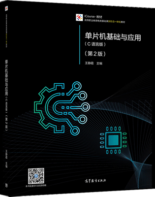

首页 > 书籍下载
《单片机基础与应用(C语言版)》王静霞第2版PDF下载（高清完整版）
|  | 作者：王静霞 |
| 出版时间：2021年03月01日 | |
| 出版社：高等教育出版社 | |
| 书号ISBN：9787040529968 | |
| 总页数：228 | |
| 总字数：4.6W |
这是一本精心编排的单片机入门书籍，结构清晰，知识点全面，实例丰富，适合有 C 语言基础、对单片机开发感兴趣的读者。
这里提供的是《单片机基础与应用(C语言版)》王静霞第 2 版的高清 PDF 下载，内容完整，附带目录标签。
和其它同类的单片机书籍相比，这本书包含大量的实践项目。从点亮 1 个 LED 小灯开始，项目难度逐渐递增，包括让 LED 小灯闪烁、蜂鸣器发声、流水灯、倒车警示器、简易数字电压表、数字时钟、移动广告牌、智能温度测量等。读者在逐一完成这些项目的过程中，就可以轻松入门单片机了。
下面是一位购买了这本书的读者给出的评价：
很不错的图书，使用效果非常好，专业指导性很强。
书籍目录
- 第1章 单片机及其开发环境
- 1.1 初识单片机
- 实例1 点亮1个LED
- 1.2 单片机应用系统及其开发环境
- 实例2 1个LED闪烁
- 第2章 单片机硬件系统
- 2.1 单片机内部结构
- 2.2 8051单片机引脚功能
- 实例3 8个LED闪烁
- 2.3 单片机存储器结构
- 2.4 时钟电路与复位电路
- 实例4 蜂鸣器发声
- 2.5 单片机并行I/O口
- 实例5 开关控制LED亮灭
- 第3章 C51程序设计基础
- 3.1 C51概述
- 实例6 开关控制LED交替亮灭
- 3.2 C51数据类型
- 3.3 C51运算符
- 3.4 C51程序结构
- 实例7 顺序程序结构控制流水灯
- 实例8 选择程序结构开关控制LED常亮或闪烁
- 实例9 移位操作控制流水灯
- 3.5 C51函数
- 实例10 库函数控制流水灯
- 实例11 延时函数定义与调用
- 3.6 C51数组
- 实例12 数组控制流水灯
- 3.7 程序设计应用实例
- 实例13 花样霓虹灯
- 实例14 贪吃蛇
- 实例15 倒车警示器
- 第4章 定时器/计数器
- 4.1 定时器/计数器工作原理
- 实例16 LED循环闪烁
- 4.2 定时器/计数器工作方式
- 4.3 定时器/计数器应用实例
- 实例17 简易计数报警
- 实例18 正脉冲宽度测量
- 实例19 定时器输出PWM可调光台灯
- 第5章 中断系统
- 5.1 什么是中断
- 5.2 单片机中断系统结构
- 实例20 中断控制LED闪烁
- 5.3 中断处理过程
- 实例21 LED显示秒表
- 第6章 人机交互接口设计
- 6.1 单片机与LED接口设计
- 实例22 LED静态显示2位秒表
- 实例23 LED动态显示指定信息
- 实例24 LED动态显示移动广告屏
- 实例25 LED动态显示2位秒表
- 6.2 单片机与LED点阵显示器接口设计
- 实例26 LED点阵显示器稳定显示指定图形
- 实例27 LED点阵显示器移动显示广告屏
- 6.3 单片机与字符型液晶显示器接口设计
- 实例28 字符型液晶显示广告牌
- 6.4 单片机与按键接口设计
- 实例29 按键状态LED显示
- 实例30 按键控制广告牌显示
- 实例31 LED显示矩阵式键盘按键号
- 第7章 串行接口通信技术
- 7.1 串行通信基础
- 7.2 单片机串行接口
- 实例32 串口控制16个LED流水灯
- 7.3 RS-232C串行接口
- 7.4 单片机串行接口应用实例
- 实例33 单片机双机通信
- 实例34 单片机与PC通信
- 第8章 A/D转换与D/A转换
- 8.1 认识A/D转换器与D/A转换器
- 8.2 单片机扩展I2C总线器件
- 8.3 单片机与PCF8591接口设计
- 8.4 A/D转换与D/A转换应用实例
- 实例35 简易数字电压表
- 实例36 信号发生器
- 第9章 综合应用实例
- 实例37 数字钟
- 实例38 倒计时交通灯
- 实例39 16×16点阵显示屏移动广告牌
- 实例40 简易打字游戏机
- 实例41 智能温度测量
书籍下载
一键登录，免费下载完整版 PDF，文件名称：《单片机基础与应用(C语言版)》王静霞第2版.pdf